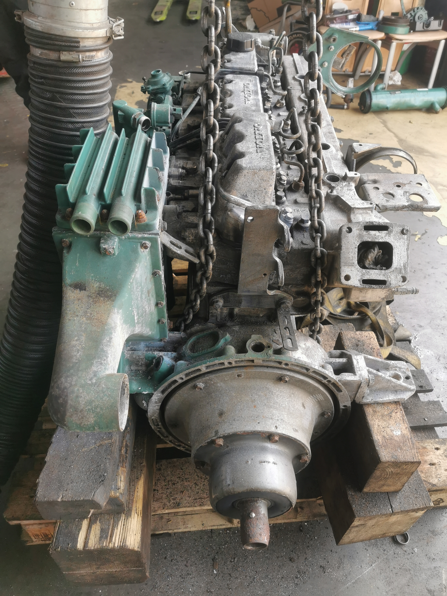
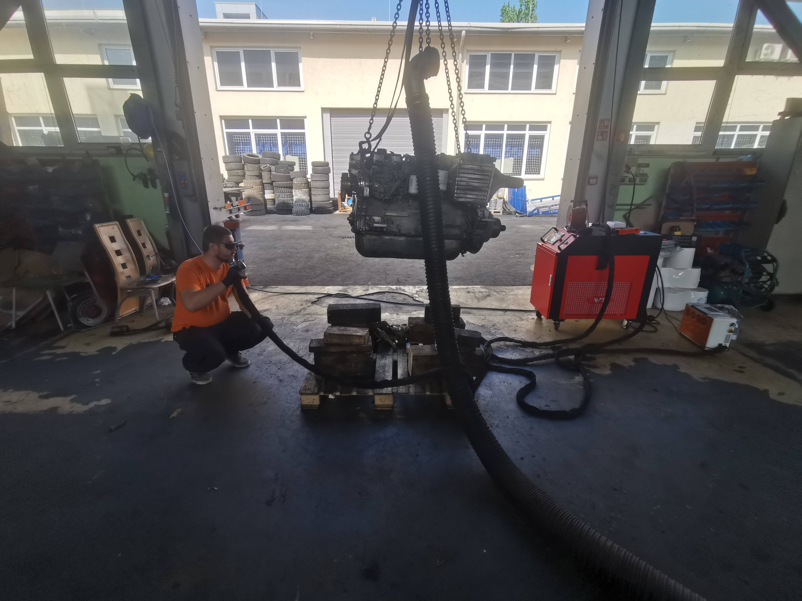
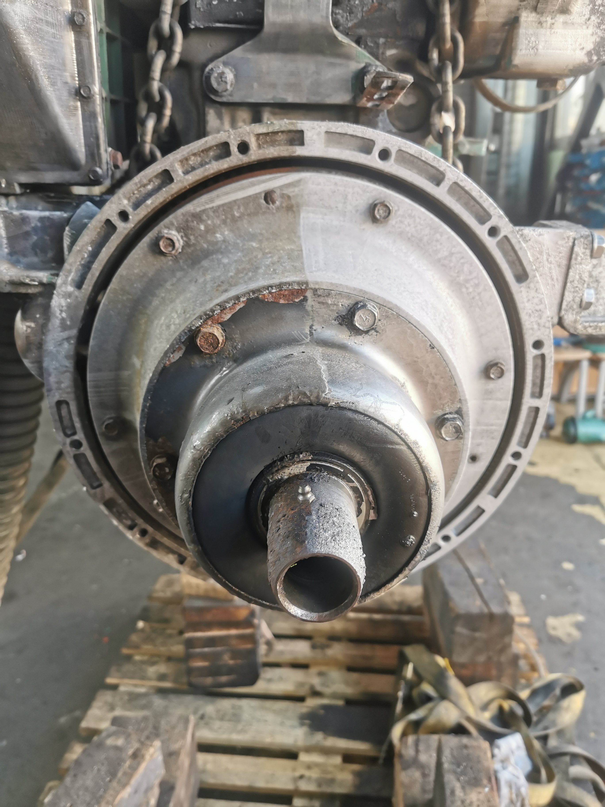

Oljne nečistoče, oksidacija in zahtevni detajli
Brodski motor je bil prekrit z oljnimi nečistočami, oksidacijo in sledovi dolgotrajne uporabe. Površine so bile razgibane, z veliko robovi, spoji in težje dostopnimi mesti, kjer klasično ročno čiščenje zahteva veliko časa in pogosto ne zagotovi enakomernega rezultata.
Cilj projekta je bil odstraniti površinske nečistoče in pripraviti kovinske dele motorja za nadaljnjo obnovo, servis oziroma zaščito.
Nadzorovano čiščenje brez peskanja
Površino smo čistili postopoma in prilagajali nastavitve glede na posamezne kovinske dele. Laser je omogočil ciljno odstranjevanje oksidacije in nečistoč brez grobega mehanskega poseganja v osnovni material.
Posebna pozornost je bila namenjena robovom, utorom, spojem in kompleksnim oblikam motorja, kjer je natančnost postopka še posebej pomembna.
Prednosti pri čiščenju motorjev in kovinskih komponent
Odstranjevanje oljnih nečistoč
Čiščenje površinskih oblog in trdovratnih nečistoč z nadzorovanim postopkom.
Natančno čiščenje detajlov
Primerno za robove, utore, spoje in zahtevne geometrije industrijskih komponent.
Priprava za obnovo
Očiščeni kovinski deli so pripravljeni za nadaljnji servis, obnovo ali zaščito.
Štiri faze izvedbe
Ocena stanja, nečistoč in občutljivih delov.
Izbira primernih nastavitev za posamezne površine.
Odstranjevanje oksidacije, oljnih oblog in nečistoč.
Kontrola očiščenih površin pred nadaljnjo obnovo.
VETIS – brodski motor
Fotografije prikazujejo stanje motorja, potek čiščenja in pripravo kovinskih delov.



Čistejša površina in priprava za nadaljnjo obnovo
Po izvedbi so bili kovinski deli motorja očiščeni in pripravljeni za naslednjo fazo obnove oziroma servisa. Projekt za VETIS je dober primer uporabe laserskega čiščenja pri industrijskih motorjih in kompleksnih kovinskih sklopih.
Potrebujete lasersko čiščenje motorja ali industrijske komponente?
Izvajamo lasersko čiščenje motorjev, strojev, kovinskih delov in zahtevnih industrijskih površin po Sloveniji. Pošljite fotografije, opis stanja in lokacijo izvedbe.